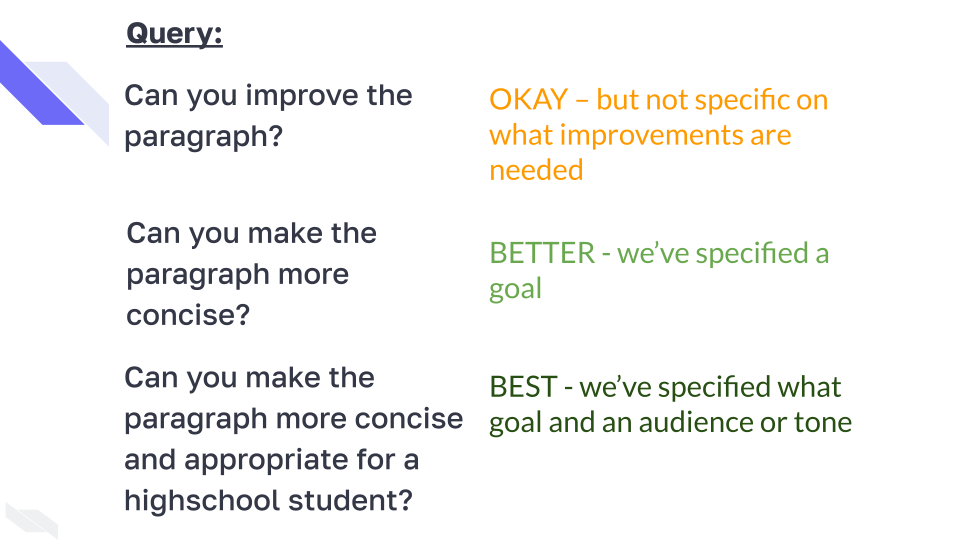

Spatial Transcriptomics
Choosing the right assay
{kind=link}
Step 1: Do you even need spatial transcriptomics (ST)?
ST helps evaluate the complex nature of tissues:
- Evaluating cellular interactions
- Evaluating niche-level interactions
Examples:
- Tumor cells interaction with the surrounding microenviroment
- Tumor heterogeneity
- Tumor Angiogenesis
- Cellular differentiation during development
- Track tissue repair
- Track immune cell interactions

Image by envandrare from Pixabay
Another aspect to think about: journals will often expect it.
Examples of when ST might not be needed:
- Evaluating at the organ level
“What genes are differentially expressed in a given organ under normal and diseased conditions?”
- Evaluating cultured cells
“How does a drug affect gene expression in cultured fibroblasts?”
- Evaluating cell profiles but without cell-cell interactions interest
“What are the transcriptional profiles of different immune cell types in response to infection?
Step 2: Do we have the necessary resources?
ST is costly, requires specialized equipment and training.
ST is costly both for data acquisition and analysis
- A Visium slide (4 tissues) costs ~ $6K–8K (before sequencing or analysis costs)
- a Xeinium slide (<1000 genes) costs ~$5K–8K (before analysis costs)
Specialized Equipment
Most technologies will require microtome/cryostat for tissue slices, brightfield microscope, and scanner
Visium 10X currently requires barcoded slides and slide cassette, and a sequencer
GeoMx currently requires GeoMx DSP instrument, fluorescence microscope, (and likely a squencer)
MERSCOPE requires a MERSCOPE instrument
slide-seq/Curio - requires a barcoded substrate called “puck”
Speciaized Skills
- Bona-fide spatial analysis often requires advanced spatial statistics knowledge i.e., traditional non-spatial scRNA-seq analysis is likely not appropriate
Study System Considerations
Tips for AI Use
- Don’t use prompts that would violate data privacy restrictions or licensing (most commercial tools are not private!)
- Be specific and iterate on prompts
- Where possible work in an environment that allows for projects to retain the context
- Typically asking AI to improve existing work is better than starting from scratch
- Check everything! Ask the AI to question itself and have a human (maybe you) review text and code
